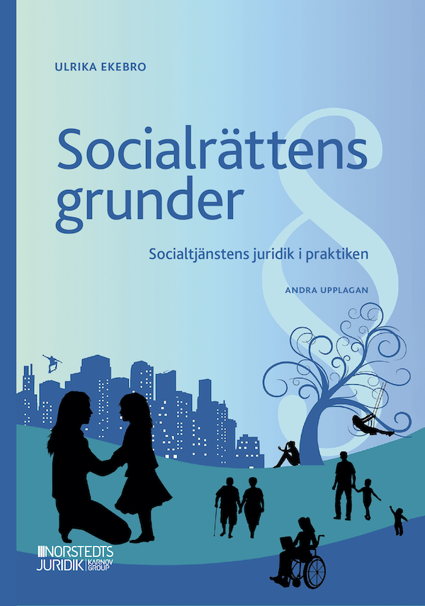

UTBILDNING
socialtjänst
Kompetensutveckling för yrkesverksamma - kunskap och ökad trygghet gällande sociallagstiftningen och hur den ska omsättas i det dagliga arbetet.
Läs mer om utbildningKompetensutveckling för yrkesverksamma - kunskap och ökad trygghet gällande sociallagstiftningen och hur den ska omsättas i det dagliga arbetet.
Läs mer om utbildningRegelbundet återkommande handledning för arbetsgrupper och chefer, eller snabba socialrättsliga konsultationer när behov uppstår.
Läs mer om konsultationNär det oväntade händer. Strategiskt stöd till dig som leder ett företag eller en organisation genom en kris, konflikt eller någon form av komplex situation.
Läs mer om krishantering
"Socialrättens grunder. Socialtjänstens juridik i praktiken”
Norstedts Juridik 2025.
En bok som jag själv tyckte saknades och därför skrev: en bok där läsaren på ett lättillgängligt sätt ges en helhetsbild av socialtjänstens komplexa uppdrag och ansvar i samhället, liksom en konkret genomgång av regelverket inom alla socialtjänstens områden. Syftet är att förmedla förståelse för hur allt hänger ihop – från lagstiftningens bakomliggande värderingar, via socialtjänstens organisation, till det konkreta arbetet med dem som behöver samhällets stöd och skydd.
Denna andra upplaga är uppdaterad utifrån den nya socialtjänstlagen som trädde i kraft den 1 juli 2025, och vars syfte är att göra socialtjänsten mer förebyggande, tillgänglig och kunskapsbaserad.
Boken vänder sig främst till dig som studerar eller arbetar inom socialtjänstens verksamhetsområde, t.ex. socionomer och socialpedagoger, såväl myndighetsutövare som behandlingspersonal och förtroendevalda. Den kan också vara av intresse om du arbetar med näraliggande frågor, kanske i samverkan med socialtjänsten, och vill ha ökad kunskap om socialrätten.
Min förhoppning med boken, liksom med alla mina utbildningar, är att den ska utgöra ett stöd för att tillämpa de socialrättsliga kunskaperna korrekt och med klokhet.
Köp boken
Att kunna använda min kompetens och erfarenhet för att bidra till utveckling inom verksamheter som möter stora och små människor – det är min drivkraft och den röda tråden i min verksamhet.
Med åren har det blivit allt tydligare att verksamheter bara kan utvecklas via individerna som finns i dem, och oavsett vad man arbetar med är det en viktig nyckel: att utgå från dem man möter och hitta sätt som är till hjälp för just deras utveckling. När det gäller socialrätt kan det vara att prata om abstrakt juridik på ett sätt som är konkret och användbart i praktiken.
Den professionella grund jag står på är min socionomkompetens, vidareutbildningar av skilda slag och 30 års erfarenhet av socialt arbete i olika former, socialtjänst, tillsynsverksamhet och numera utifrån perspektivet utbildning, ledning och organisationsutveckling.
Som utbildare och handledare står jag i löpande kontakt med de föränderliga svårigheter som socialtjänsten ställs inför, och jag har också förmånen att kontinuerligt ta del av input och kompetens från praktiken. Detta i kombination med uppdrag som processledare och krishanterare har byggt en erfarenhetsbank som jag gärna delar med mig av. Som kompetensmässiga tillgångar ser jag även de lärdomar jag samlat under många år som ledare inom idrotten och annan ideell verksamhet.